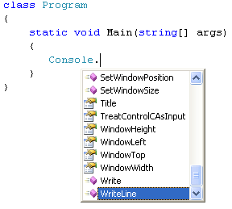

Your first line of C# code
The only thing we'll do with the code is to write some text to the screen. But here's the code that Visual C# prepares for you when you first create a Console Application:
For now, ignore the lines that start with using as we'll get to them later in the course. (The image above is from version 2012 - earlier versions will have fewer using lines) But they add references to in-built code. The namespace line includes the name of your application. A namespace is a way to group related code together. Again, don't worry about the term namespace, as you'll learn about these later.
The thing that's important above is the word class. All your code will be written in classes. This one is called Program (you can call them anything you like, as long as C# hasn't taken the word for itself). But think of a class as a segment of code that you give a name to.
Inside of the class called Program there is this code:
static void Main(string[] args)
{
}
This piece of code is something called a Method. The name of the Method above is Main. When you run your programme, C# looks for a Method called Main. It uses the Main Method as the starting point for your programmes. It then executes any code between those two curly brackets. The blue words above are all special words - keywords. You'll learn more about them in later chapters.
But position your cursor after the first curly bracket, and then hit the enter
key on your keyboard:
The cursor automatically indents for you, ready to type something. Note where the curly brackets are, though, in the code above. You have a pair for class Program, and a pair for the Main method. Miss one out and you'll get error messages.
The single line of code we'll write is this (but don't write it yet):
Console.WriteLine("Hello C Sharp!");
First, type the letter "C". You'll see a popup menu. This popup menu is called the IntelliSense menu. It tries to guess what you want, and allows you to quickly add the item from the list. But it should look like this, after you have typed a capital letter "C":
C# 2010
Older versions of C#
The icon to the left of the word Console on the list above means that it is a Class. But press the Enter key on your keyboard. The word will be added to your code:
Now type a full stop (period) immediately after the word Console. The IntelliSense menu appears again:
You can use the arrow keys on your keyboard to move up or down the list. But if you type Write and then the letter L of Line, IntelliSense will automatically move down and select it for you:

Press the Enter key to add the word WriteLine to your code:
Now type a left round bracket. As soon as you type the round bracket, you'll see this:
WriteLine is another Method (A Method is just some code that does a particular job). But the yellow box is telling you that there are 19 different versions of this Method. You could click the small arrows to move up and down the list. Instead, type the following:
"Hello C Sharp!"
Don't forget the double quotes at the start and end. These tell C# that you
want text. Your code will look like this:
Now type a right round bracket:
Notice the red wiggly line at the end. This is the coding environment's way of telling you that you've missed something out.
The thing we've missed out is a semicolon. All complete lines of code in C# must end with a semicolon. Miss one out and you'll get error messages. Type the semicolon at the end and the red wiggly line will go away. Your code should now look like this:
Note all the different colours. Visual C# colour-codes the different parts of your code. The reddish colour between double quotes means that you want text; the green colour means it's a Class; blue words are ones that C# reserves for itself.
(If you want, you can change these colours. From the menu bar at the top, click Tools > Options. Under Environment, click Fonts and Colors.)
Time now to Build and Run your code!